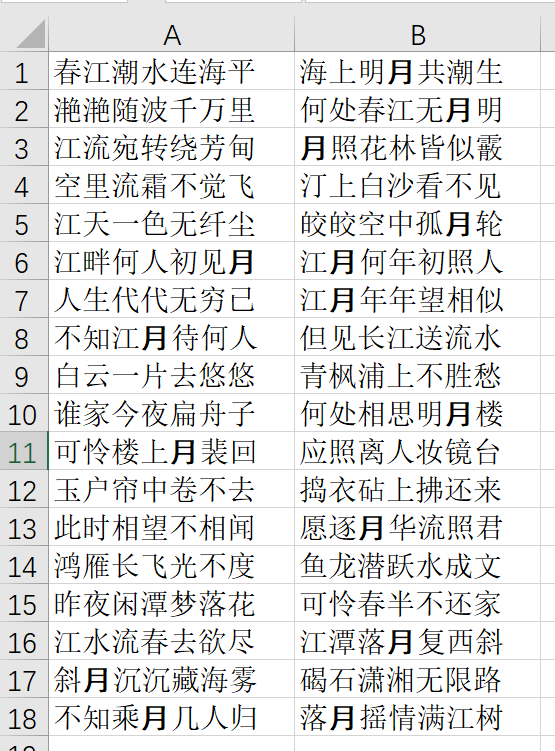

如何在Excel中加粗指定的关键字？
在Word中，我们可以使用“查找-替换”功能的“格式”选项，指定查找或替换的字符的格式（如加粗、斜体等）。然而在Excel中，当我们设置替换内容的格式时，整个单元格都会被渲染为该格式。
例如，当我们想要将表格中所有的“月”字加粗时，如果这样操作：
则会得到这样的结果：
这并不符合我们的预期。为此，可以使用VBA功能。选择“开发工具-宏”并新建一个宏：
Sub Emph()
'遍历所有工作表
For n = 1 To Worksheets.Count
Dim ws As Variant
Set ws = Worksheets(n)
'遍历活动单元格
For r = 1 To ws.UsedRange.Rows.Count
For c = 1 To ws.UsedRange.Columns.Count
'匹配关键字
Dim cell_value As String
Dim keyword As String
Dim kw_len As Integer
Dim str_loc As Integer
cell_value = ws.Cells(r, c).Value '提取单元格的值
keyword = "月"
kw_len = Len(keyword)
start_loc = InStr(1, cell_value, keyword, 1) '返回匹配到的字符串的起始位置
'对匹配到的关键字加粗、标黑体
If start_loc > 0 Then
With ws.Cells(r, c).Characters(start_loc, kw_len).Font
.Bold = True
.Name = "黑体"
End With
End If
Next
Next
Next
End Sub
在加粗的同时，还顺手修改了字体，使得关键字更加突出。
点击运行，可以看到运行结果：

这正是我们想要的效果。
不过，如果一个单元格内有多个重复的关键字，这种方法只能在每个单元格内匹配到第一个。